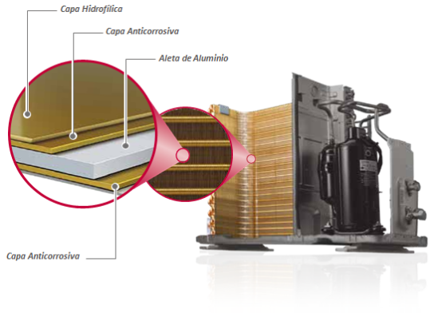

		<div class="row text-center text-lg-left ventanas" style="background-color: #fff;">
			<div class="col-lg-12 pt-lg-6 pt-4 px-lg-5 ">
				<div></div>
			</div>
			<div class="col-lg-5 px-lg-5">
				<div class="mt-lg-6 mt-4 mb-lg-3"><h2 class="titulov">GOLD FIN <sup>TM</sup></h2></div>
				<div class="subtitulo pb-3">¿Cómo funciona?</div>
				<div class="texto">El recubrimiento especial de color dorado en el intercambiador de calor <strong>anterior a la corrosión, extendiendo así el tiempo de vida del equipo</strong>.</div>
			</div>
			<div class="col-lg-7 p-lg-5 py-4">
				
				<div></div>
			</div>
		</div>